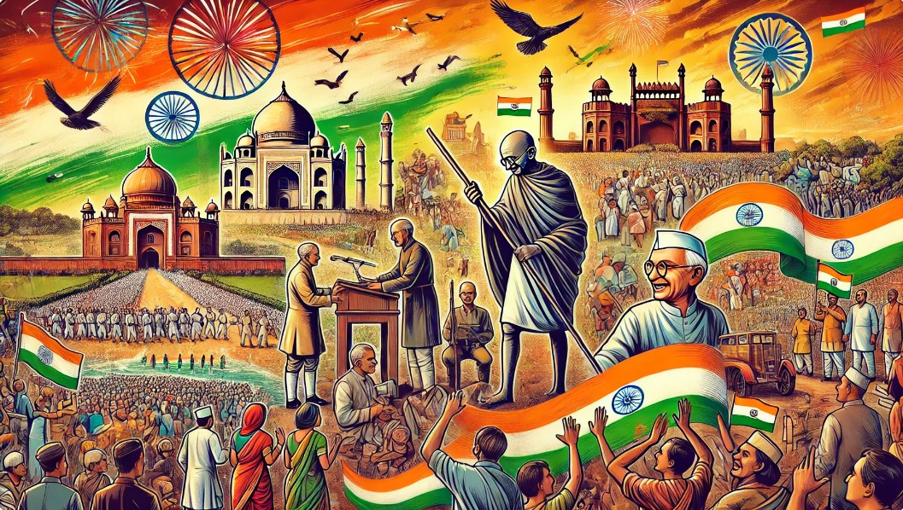
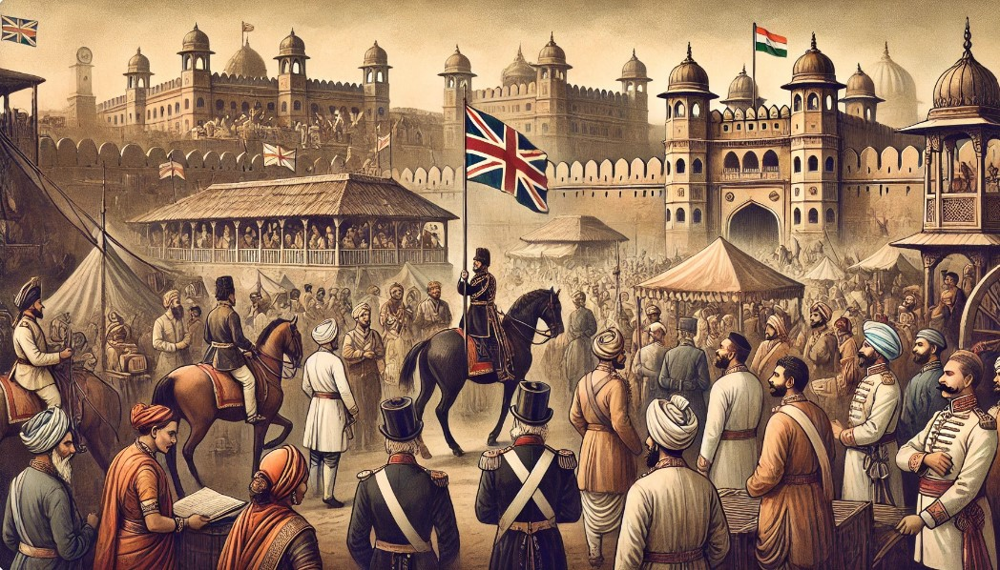
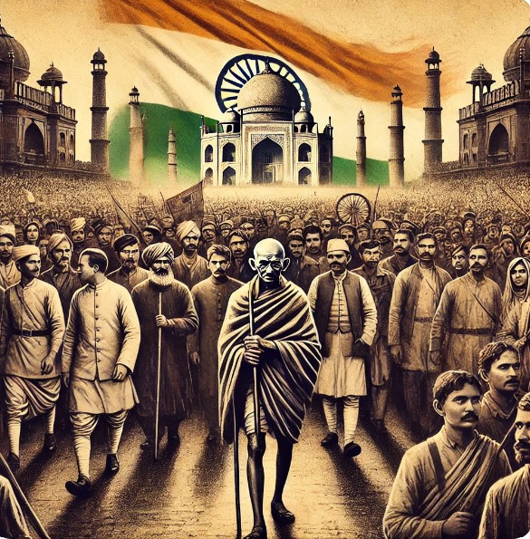
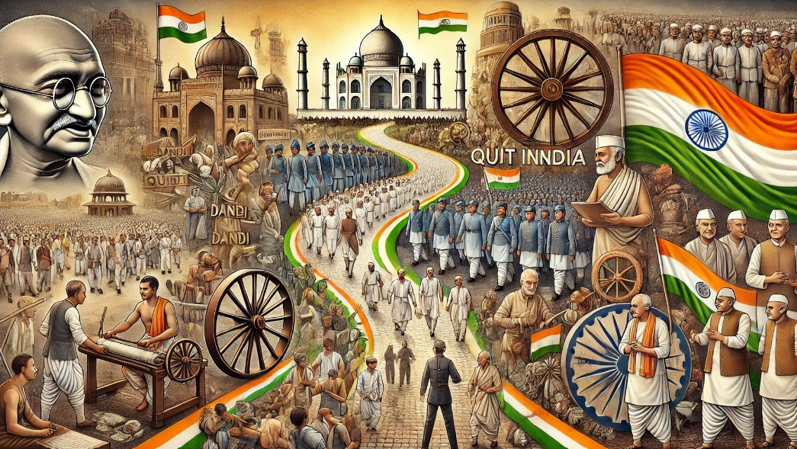
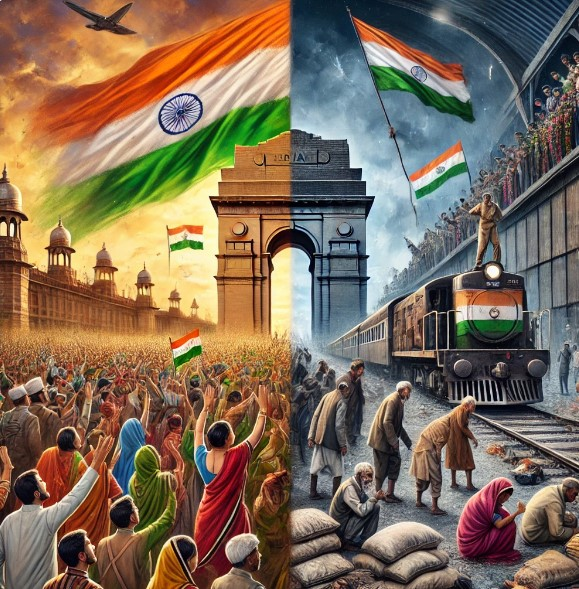
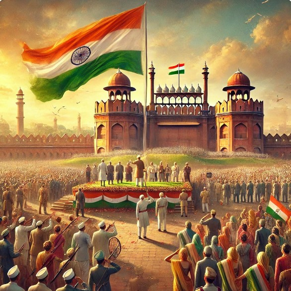
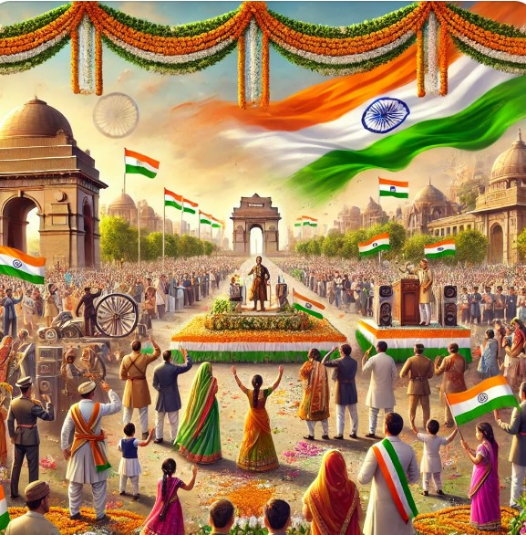
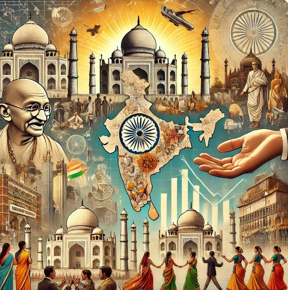
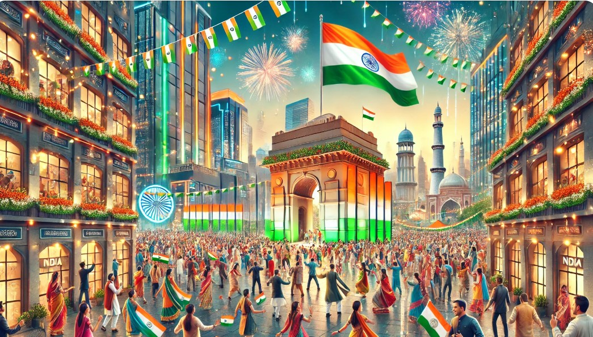
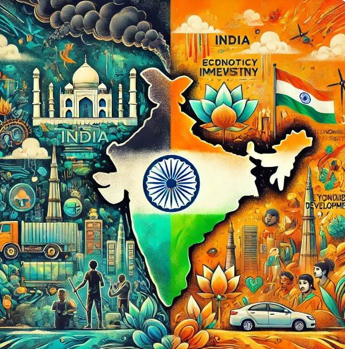

"Celebrating India's Spirit: A Journey Through Independence and Unity"

India's Independence Day, celebrated annually on August 15th, marks the country's freedom from British colonial rule in 1947. This day is of immense historical significance and is observed with patriotic fervor across the nation. Here's a comprehensive overview, covering all aspects from small to big details:
Background of British Rule in India
East India Company (1600-1858): British involvement in India began with the establishment of the East India Company in 1600. Over time, the company gained control over vast territories in India through trade and military conquests.
British Crown Rule (1858-1947): Following the Indian Rebellion of 1857, the British Crown took direct control of India, leading to the establishment of the British Raj. India was ruled as a colony under the British Empire.

Indian Freedom Struggle

Early Resistance:
Revolts and Rebellions: There were several early uprisings against British rule, such as the Sannyasi Rebellion (late 18th century), and the Vellore Mutiny (1806). However, these were localized and lacked widespread coordination.
Formation of Indian National Congress (INC) (1885): The INC was established to provide a platform for political dialogue and reform. Initially, its approach was moderate, seeking more participation for Indians in governance.
Key Movements:
Swadeshi Movement (1905): Triggered by the partition of Bengal, the Swadeshi Movement encouraged the boycott of British goods and the revival of indigenous industries.
Non-Cooperation Movement (1920-1922): Led by Mahatma Gandhi, this movement called for non-violent resistance and non-cooperation with the British government.
Civil Disobedience Movement (1930-1934): Another major movement led by Gandhi, it involved defying British laws, such as the Salt March in 1930.
Quit India Movement (1942): Launched during World War II, the movement demanded an end to British rule in India. It was marked by widespread protests and was met with severe repression by the British authorities.
Revolutionary Activities:
Bhagat Singh, Rajguru, and Sukhdev: These revolutionaries were involved in armed resistance against British rule. Their execution in 1931 sparked nationwide protests.
Subhas Chandra Bose and INA (1943-1945): Bose formed the Indian National Army (INA) with Japanese support to fight against the British. Although the INA's efforts were ultimately unsuccessful, they inspired many Indians.
The Path to Independence
World War II Impact (1939-1945): India's involvement in World War II without consultation caused widespread resentment. The war also weakened the British Empire economically and politically.
Cripps Mission (1942): An attempt by the British to secure Indian cooperation during the war by promising future self-government, but it was rejected by Indian leaders.
Indian National Army Trials (1945-1946): The trials of INA officers stirred public sentiment against British rule.
Naval Mutiny (1946): A mutiny by Indian sailors in the Royal Indian Navy was another sign of growing unrest.
Cabinet Mission (1946): Sent by the British government to discuss the transfer of power, this mission proposed a plan for a united India with significant autonomy for provinces.

Partition and Independence

Mountbatten Plan (1947): Lord Mountbatten, the last Viceroy of India, proposed the partition of India into two independent dominions: India and Pakistan. This plan was accepted by Indian leaders to avoid further bloodshed.
Independence and Partition (August 15, 1947): India became an independent nation on August 15, 1947, while Pakistan was formed a day earlier on August 14. The partition led to one of the largest mass migrations in history, with communal violence resulting in significant loss of life and displacement.
Key Figures in Indian Independence
Mahatma Gandhi: The leader of the Indian National Congress and the principal figure in the non-violent struggle for independence.
Jawaharlal Nehru: The first Prime Minister of independent India, a central figure in Indian politics both before and after independence.
Sardar Vallabhbhai Patel: Played a crucial role in the integration of princely states into India.
Dr. B.R. Ambedkar: Principal architect of the Indian Constitution and a key figure in the fight for social justice.
Subhas Chandra Bose: Leader of the INA, he sought to gain independence through armed struggle.
Bhagat Singh: A revolutionary who became a symbol of the fight against British oppression.
The First Independence Day (August 15, 1947)

Midnight Speech by Jawaharlal Nehru: On the eve of Independence, Nehru delivered the iconic "Tryst with Destiny" speech, marking the birth of a free India.
Transfer of Power: The British flag was lowered, and the Indian tricolor was hoisted over the Red Fort in Delhi.
Celebrations: Across India, people celebrated with joy and fervor, but the mood was also somber due to the partition-related violence.
Significance and Observance
National Holiday: Independence Day is a national holiday in India, marked by celebrations across the country.
Flag Hoisting: The Prime Minister of India hoists the national flag at the Red Fort in Delhi, followed by a speech addressing the nation.
Cultural Programs: Schools, colleges, and government institutions organize cultural programs, parades, and other events to celebrate the day.
Patriotic Songs: Songs like "Jana Gana Mana" (the national anthem) and "Vande Mataram" are sung with pride.
Tributes to Freedom Fighters: Tributes are paid to the freedom fighters who sacrificed their lives for India's independence.

Legacy and Impact

Constitution of India (1950): India adopted its constitution on January 26, 1950, making it a sovereign, socialist, secular, and democratic republic.
Unity in Diversity: Independence brought together a diverse population, uniting them under the Indian identity.
Economic and Social Progress: Post-independence, India has made significant progress in various fields, including agriculture, industry, science, and technology.
Contemporary Celebrations
Flag Hoisting: The Prime Minister hoists the flag at the Red Fort, followed by a parade showcasing India's cultural diversity and military strength.
Presidential Address: The President of India addresses the nation on the eve of Independence Day.
Patriotic Displays: Citizens display the national flag, and buildings are illuminated in the colors of the tricolor.

Challenges and Reflection

Partition Trauma: The partition of India and Pakistan remains a painful chapter in history, with ongoing debates about its impact.
Continuing Struggles: India continues to grapple with issues like poverty, inequality, and communal tensions, striving to uphold the ideals of freedom, equality, and justice.
Economic Resurgence: Despite challenges, India's economy has shown remarkable resilience and growth. The country’s IT industry, space program, and entrepreneurial spirit are often highlighted as success stories.
India's Independence Day is a time of reflection, pride, and hope. It marks the day when India broke free from colonial rule, a testament to the resilience and unity of its people. As we celebrate this significant day, we honor the sacrifices made by countless freedom fighters and the enduring spirit that has shaped the nation. Independence Day reminds us of the values of democracy, justice, and liberty that define India. It is a moment to appreciate the progress made and to reaffirm our commitment to building a stronger, more inclusive, and prosperous India. As the tricolor waves high, it inspires us to continue the journey of nation-building with renewed vigor and a shared vision for a brighter future.
"Discover the rich history and significance of India's Independence Day by exploring more details here. Dive into the stories of struggle, triumph, and freedom that shaped the nation, and learn about the traditions, celebrations, and the enduring spirit of independence that continues to inspire millions."